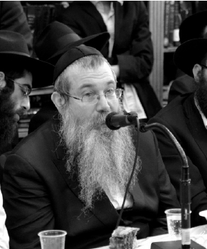

Living with Moshiach
In this interview, R’ Yosef Yitzchok Offen explains what the inyan of a “Rebbe” is, the need for a Rebbe in recent generations, the connection between publicizing Moshiach’s identity and hiskashrus to the Rebbe, and why we need to publicize that the Rebbe is Moshiach.
Interview by Avrohom Rainitz

To say that Chassidus innovated the concept of Rebbe is not correct, since Chassidus and Rebbe is one thing. It’s not like there was Chassidus and this was followed by Rebbe. The Rebbe Rayatz writes in Likkutei Dibburim that Chassidim and Rebbeim existed from the day G-d created man on the earth. Adam HaRishon was a Chassid as the Gemara says, “Adam HaRishon was a great Chassid.”
And who was the first Rebbe?
The first Rebbe written about explicitly in the Torah is Moshe Rabbeinu, who said about himself, “I stood between G-d and you at that time to tell you the word of G-d.” In the preceding verse, Moshe says, “Hashem spoke to you face to face,” and Rashi explains, “This is what Moshe said: Do not say I am misleading you over nothing like a middleman does between seller and customer, for the seller himself spoke to you.” This seems to be a contradiction. How could Moshe use the expression “face to face” and that “there is no middleman” when he says “I stood between Hashem (the seller) and you (the customer)”?
We must conclude that Moshe Rabbeinu was a memutza ha’mechaber (connecting intermediary) and not a memutza ha’mafrid (dividing intermediary) between Hashem and the Jewish people. He was able to be an intermediary and still not be a middleman, for he was not a divider. This is what a Rebbe is, and this is the first source in Torah for the inyan of a Rebbe.
This is not Chassidus; it is Chumash, and from the simple understanding of the text we have to conclude that Moshe is a memutza ha’mechaber. In Chassidic terminology it is called “atzmus u’mehus k’fi sh’hishkin atzmo b’guf gashmi” (Essence as it dwells within a physical body). In simpler terms, that even a five year old can understand, it is called “the Sh’china speaking from the throat of Moshe.” The Rebbe proves this from the Chumash where Moshe says, “I will give grass in your field,” for how could Moshe say he would provide grass when Hashem is the one who provides it? Chazal explain that Moshe was utterly nullified to Hashem so that the Sh’china spoke from his throat. This is something anyone can understand, even if he did not study Chassidus.
This is a response to those who ask: Since we have Hashem, who needs a Rebbe? The role of a Rebbe is to stand between Hashem and the Jewish people and to tell us the word of Hashem. There are Torah and mitzvos which are eternal and will never change, but there is also daily life and questions about how to act which change from generation to generation. For this, we need a Rebbe who will tell us the word of Hashem and lead the Jewish people so that we do what Hashem wants.
If it is so simple, and practically explicit in Torah, how is it that until recent generations nobody knew about it?
There are many things whose source is in Torah which were hidden for hundreds of years until Chassidus came and brought it out into the open. Take, for example, the concept of “Kadeish atzmecha b’mutar lach” (sanctify yourself in that which is permissible), derived from a verse in Torah (“K’doshim tihiyu”). In Shulchan Aruch there is an entire siman with a list of things that a person should refrain from, even though they are not prohibited. Obviously, even before the revelation of the teachings of Chassidus, there were G-d fearing Jews who fulfilled this mitzva, but they did so with a sense of constraint and sadness. It was possible to feel that Judaism is confining and for a mitzva to be fulfilled joylessly. Then along came Chassidus and revealed that “there is naught but Him,” i.e. anything not connected to G-dliness is klipa. When a Jew learns and understands that when he does something that is not “for the sake of Heaven” he is separating himself from Hashem, then since he does not want to be separated from Hashem, he will not do anything that is not for His sake. Someone who learns Chassidus approaches the fulfillment of “Kadeish atzmecha b’mutar lach” with the understanding and knowledge that through this he is connecting to Hashem at every moment, so he can fulfill the mitzva with joy.
There is a verse in Mishlei (18:1) that says, “L’taava yivakesh nifrad” (He who is separated, seeks lust). Without Chassidus, you miss the significance of this verse. There can be a religious Jew who sees nothing wrong with eating ice cream, especially today when there are excellent hechsherim. He sees no reason to refrain from it. Only someone who learned Chassidus understands that when you eat something just for the sake of taava (the desire, craving), even if it is kosher with the best hechsher, at that moment, in a subtle way, you are separating from Hashem!
The same is true for the mitzva of “Love your fellow like yourself.” Before the revelation of Chassidus, it was understood to mean to eliminate hatred. Nobody thought it meant to literally love someone else like you love yourself. A G-d fearing Jew was ready to help another, even if it cost him money, but he did not for a moment think that he had to take care of the other person precisely the way he would take care of himself! He was sure that he is an entity onto himself and the other person is an entity unto himself, and there is no connection between them. Chassidus comes and says that the mitzva is meant literally, that you need to love the other person just like you love yourself. And yet it is not simply a super-rational biblical decree, because we and the other person are one entity. Just as you love yourself, you need to love that other part of yourself, i.e. the other person.
Yet there is a fundamental difference between these examples and the inyan of Rebbe and Chassid. All these examples existed to some degree or another before the revelation of Chassidus, and there were singular individuals who reached high levels in “sanctify yourself” or “love your fellow like yourself.” Chassidus merely illuminated these ideas and made them more accessible. The inyan of Rebbe and Chassid did not exist at all for thousands of years! How could something so essential be hidden from all?
Indeed, when it comes to the inyan of Rebbe and Chassid we see a peculiar thing. When the Jewish nation started out, this inyan was out in the open. The generation of the desert knew that Moshe Rabbeinu stood between them and Hashem. The generation that entered Eretz Yisroel also knew that Yehoshua was the Rebbe, the “Moshe Rabbeinu of his generation.” Then came the period of the Judges in which it wasn’t so clear who the “Moshe Rabbeinu of the generation” was, through whom the G-dly bounty comes down to the world. Only on rare occasions did it happen that “Moshe’s” identity was known to all, like Mordechai in his time. In the maamer “V’Ata Tetzaveh,” the Rebbe says that Mordechai was the acknowledged “shepherd of faith” of all the Jewish people in his generation. But that was something unique. In general, they did not know who the “Moshe Rabbeinu” was.
Today, we know that in the time of Rashbi, he was the “extension of Moshe in his generation.” We know this after the Zohar was revealed and after the Arizal said so explicitly, but in Rashbi’s generation hardly anyone knew he was the Nasi HaDor!
We must say that there were generations in which the inyan of Nasi HaDor operated in a “top-down” manner, and it was not necessary for people to know who it was. The Nasi can draw down all the bounty to his generation without people knowing who is responsible for it all. The simple Jew was required to do Torah and mitzvos, while the Nasi HaDor took care of global matters on his own. Anyone could fulfill the idea of cleaving to Torah scholars by cleaving to his personal rav. That’s the way it once was: a person had his teacher, his master, to whom he clung and through whom he fulfilled the mitzva of “cleave to Him.”
But in later generations, as part of His cosmic plan, Hashem wanted to restore things to the way they were in the time of Moshe Rabbeinu, namely that the influence of the Nasi HaDor should work from the “bottom-up,” that people should know who the Nasi HaDor is and receive his material and spiritual influence in this way.
We might add, along the lines of what the Rambam says, that prophecy will be restored in the future before Moshiach comes. The Rebbe explains that this is by way of preparing for Moshiach’s coming. We can say that since, when Moshiach is revealed, everyone will know that he is the Moshe Rabbeinu of the generation, Chassidus and the inyan of a Rebbe were revealed in order to prepare for this.
In this matter, we see how “the end is implanted in the beginning.” At the outset of the Jewish nation, the indivisible entity that was the People was obvious within the parts and everyone knew who the Nasi HaDor was. This is also why there were hardly any disputes among the Jewish people, because the common denominator between all Jews was out in the open. As the years went by, the perception of the nation as a whole dimmed and the differences in the details were heightened. Various customs developed and each person acted in accordance with the root of his individual soul. In latter generations, as we get closer to the coming of Moshiach when the whole will once again be manifest in the individual parts, when it will be revealed how the entire Jewish nation is one homogeneous unit, the inyan of Nasi HaDor made a comeback. It emphasizes the whole-to-parts relationship which unites the entire nation.
When learning the Rebbe’s sichos, you get the impression that in our generation, the inyan of “Nasi HaDor” is emphasized more than in earlier generations.
Absolutely. The closer we get to the Geula, the more the inyan of the Nasi HaDor is revealed.
Some say that in earlier generations, the connection to the Rebbe was the means to get to the teachings of Chassidus, while in our generation, the Rebbe innovated that hiskashrus is not just a means but a goal. Is this true?
Not exactly. Even in earlier generations there were Chassidim who were utterly mekushar to the Nasi HaDor and not just as a means to get to Chassidus. Take for example the Chassid R’ Isaac of Homil, a Chassid of the earlier Rebbeim, who once said that if the Rebbe told him to jump into fire, he would do so. This wasn’t an offhand statement. He was a Chassid on such a high level that he himself said Chassidus, and they said about him that he was a neshama of Atzilus. And yet, he was mekushar to the Rebbe with supreme bittul to the point that he was willing to be burned to death if the Rebbe said so, not because he understood but because the Rebbe said so. Can we say that his hiskashrus was only a means? Certainly not!
The difference between our generation and earlier generations is that in earlier generations, hiskashrus was the province of a few, special Chassidim. Most of the Chassidim concentrated on avoda and learning Chassidus and less on hiskashrus to the Rebbe himself. The chiddush of this generation is that the Rebbe made hiskashrus the province of everyone. Today, there is no such thing as a Chassid without hiskashrus.
Unfortunately, there are people who do not understand the inyan of hiskashrus correctly. They do Torah and mitzvos to give nachas to the Rebbe; they learn his maamarim and do his horaos to give him nachas; and they forget Hashem altogether. One who acts this way loves the Rebbe, but forgets the main point of the Rebbe which is to stand between Hashem and us. If we leave Hashem out of the picture, we are separating between the Rebbe and Hashem which goes contrary to the entire idea of Rebbe!
They might consider themselves great Chassidim who only care about the Rebbe, but they are making a serious mistake and doing just the opposite. Instead of seeing the Rebbe as a connecting intermediary, they see the Rebbe as a dividing intermediary. True hiskashrus is connecting to the Rebbe and fulfilling his horaos with the knowledge that what the Rebbe says is the word of Hashem through His prophet.
And there is no other way to connect to Hashem?
Once Hashem chose Moshe to be the connecting intermediary between Himself and the Jewish people, all flow from Hashem goes through Moshe. Nobody receives any divine flow in any other way.
There is a thought from the Chassid R’ Hillel of Paritch, which should be etched in the mind of every Chassid. In the brachos of the Haftora it says, “Who chooses Torah and Moshe His servant.” What connection is there between choosing Torah and choosing Moshe and why do we need to mention Moshe before reading the Haftora?
The answer is that there is a parallel between the Torah and Moshe. Just as until the Torah was given everyone could connect to Hashem any way he wanted, but after the Torah was chosen there is no other way but through Torah and mitzvos, so too, before Moshe was chosen, anyone could connect to Hashem directly, but after Moshe was chosen, there is no other way to connect to Hashem except through Moshe Rabbeinu.
However, as I mentioned earlier, until recent generations this idea was unknown and it was “top-down,” i.e. the connection between Hashem and the Jewish people went through Moshe, but the connection between the Jewish people and Hashem did not have to openly go through the Moshe of the generation, for people did not know who it was.
However, in later generations, after it became known that in every generation there is a Moshe through whom all the Jewish people connect to Hashem, obviously, someone who wants to connect to Hashem needs to go through the Moshe Rabbeinu of the generation who is revealed to all.
In one of the sichos, the Rebbe says there are many things in the Oral Torah that were hidden and then revealed, as the Gemara tells about Moshe Rabbeinu who heard how Rabbi Akiva expounded on the Torah in ways unknown to Moshe and he was disheartened. The Rebbe adds an important point: that all ideas in the Oral Torah which are revealed from time to time, that previously we were not obligated in, we are now obligated in once it becomes known because it is part of Torah. The same is true for inyanim in Chassidus. They are part of Torah and just as Jews are obligated in all of Torah, they are obligated in this part too.
Since this is the case, we have the holy obligation to connect as many Jews as possible to the Rebbe in order that as many as possible be connected to Hashem in the most complete way. The closer we get to Yemos HaMoshiach, the connection between the whole and the parts becomes more revealed and the need grows to overtly connect everyone to the Moshe Rabbeinu of the generation.
Why isn’t it sufficient to know that there is a Nasi HaDor through whom all the hashpaos come, without pointing a finger and saying it’s the Lubavitcher Rebbe? There are people, especially from other Chassidic groups, who find it hard to accept that the Lubavitcher Rebbe is the Nasi HaDor. They would accept the concept more readily if the Nasi was anonymous.
In recent years this question is not that relevant, because everyone knows that the Rebbe is not just another tzaddik who takes care of his own Chassidim. I remember how forty years ago it was very hard. If you would have told people then that the Rebbe is the Nasi HaDor, it would have pushed Polish Chassidim away for it insulted their Rebbe.
In the shiurim that I gave back then, in Chassidishe yeshivos, I would not bring up the subject until we learned chapter two in Tanya where it explains the concept of a Rebbe. When we learned this together, and they understood that this is a “comprehensive soul” through whom the Divine effluence passes to all the people of the generation, and this is someone responsible for the spiritual condition of everyone in the generation, they realized on their own that their own Rebbe does not fit this “job description.”
Since they weren’t comfortable with the idea of it being the Lubavitcher Rebbe, they asked whether it could be a hidden tzaddik. I told them that up until a few generations ago it could have been, but since the revelation of the Baal Shem Tov and the Mezritcher Maggid, the influence of the Nasi HaDor is in an open way. The Nasi HaDor is someone whom everyone knows is concerned about every Jew.
Today, the time has come for everyone to know who the Nasi HaDor is, and when this is out in the open, the hashpaos (divine flows) come in an open and abundant way.
From what you’re saying, it seems that the entire idea of the Nasi HaDor pertains to the spiritual dimension of life. If someone wants to connect to Hashem and do what He wants, he needs to connect to the Nasi HaDor in order to hear what Hashem has to say as expressed through His prophet. But in recent years, it looks as though it has moved more and more into the material dimension of life. There are Chassidim who work to get gentile presidents to sign proclamations in the Rebbe’s honor so that everyone will know the great personality who is the Rebbe and some distribute pictures of the Rebbe everywhere, to publicize him. These people are convinced that by doing this, they are spreading the idea of a Nasi HaDor to the world. To put it bluntly, they take a spiritual Rebbe and make him into an earthly leader: Isn’t this materializing the issue somewhat?
You would be right if these activities were done as a goal, but they are only being done as a means to an end. The goal was and is, as I said earlier, so that people know that the Rebbe is the one who is the intermediary between Hashem and us. If we want to fulfill Hashem’s will, we need to do as the Rebbe says for he is the connecting intermediary and the Sh’china speaks from his throat. However, since in this generation there are many Jews to whom it is difficult to explain such a delicate subject, Chassidim found various ways to achieve this goal.
You could have a Jew who, when he hears that the president of the United States signed to a proclamation honoring the Rebbe and establishing Education Day in his honor, will feel respect for the Rebbe. If shluchim of the Rebbe will then come and ask him to do something the Rebbe said, he will do it out of respect. As time goes by, he will understand that he needs to do what the Rebbe says not because the president of the US respects the Rebbe but because the Rebbe is the intermediary between Hashem and us. But in his current spiritual state, this is the way to get him to do what the Rebbe says.
The same thing applies to pictures of the Rebbe. Sometimes, you are in a situation in which you need to quickly make an impression on someone and you can’t stand there and explain the inyan of Rebbe at length. Under these circumstances, you can give him a picture of the Rebbe. Just looking at the picture has the power to arouse his pintele yid (Jewish soul spark). He can be far from Judaism and not know what a Rebbe is about, but looking at the Rebbe’s picture will inspire him.
The story is told about the Rebbe Maharash that he was traveling by train and when the train stopped he opened the window and looked out. He was a handsome man and everyone standing at the station looked at him. The Rebbe’s gabbai did not like this and he closed the window but the Rebbe opened it again. When he saw the gabbai’s surprised reaction he said: For some, this is their birur (their spiritual refinement process).
Technology today enables us to send the Rebbe’s image anywhere in the world. We see how looking at the Rebbe’s picture inspires people in matters of Judaism and Chassidus. Publicizing the Rebbe’s picture is a way of bringing his horaos/directives all over the world. This is why it is important that in any Chabad advertisement and certainly in brochures that promote the Rebbe’s horaos, like mivtzaim brochures, there ought to be the Rebbe’s picture. It is one of the best ways to get people to carry out the Rebbe’s horaos.
By the way, the Rebbe’s picture is also beneficial for Chassidim and the T’mimim. When a Chassid looks at the Rebbe’s picture, it inspires him with feelings of hiskashrus and strengthens his fulfillment of the Rebbe’s horaos. But for us, the main thing is not the picture itself but the feeling that the Rebbe is looking at us as we look at him. I remember that at one of R’ Shlomo Chaim Kesselman’s farbrengens, he spoke about a bachur being faced with a spiritual challenge. When he thinks of the Rebbe’s image, he feels as though the Rebbe is looking at him and this gives him the strength to withstand the test.
A woman wrote to the Rebbe that she feels a lack of desire to do mitzvos. The Rebbe wrote to her: Look at the picture of the Rebbe, my father-in-law, when you feel this lack of desire. Remember that he too, being the true shepherd of the Jewish people, is looking at you at this time. This will help.
The Rebbe says we need to publicize to the entire generation that the Nasi HaDor is the judge and advisor of our generation. Is that part of the inyan of Nasi HaDor?
The point is that in the past there were judges and enforcers, i.e. someone who did not follow the Torah’s dictates was compelled to do so through physical force. Today, the advisor is someone who pleasantly convinces a person to do what he needs to do.
Simply put, the Rebbe is the judge who gives the orders and he is also the advisor who convinces us through good advice, brachos and miracles to carry out the horaos that he stated in his role as judge. That means that the goal did not change. The goal is to connect Jews to Hashem. The chiddush is that today it is much easier to attain this goal, because when you tell a Jew that the Rebbe said to do such and such, and at the same time you tell him that he can write to the Rebbe and ask for advice and brachos, it is easier to get him to do what the Rebbe wants. When he sees that the Rebbe’s advice and brachos work out, he will certainly strengthen his observance.
This is the Rebbe’s general approach since the early years. There is a long letter that the Rebbe sent to Anash in France in which he urges them to promote the Rebbe Rayatz, that there is a Rebbe and he gives brachos and good advice, etc. When people receive advice and brachos from the Rebbe, they are more likely to accept his horaos and carry them out.
When connecting people to the Rebbe, should they be told that the Rebbe is Moshiach?
When a Jew connects to the Rebbe knowing that he is Moshiach, his connection is more complete and so it is very important to combine hiskashrus with an explanation about the Rebbe being Moshiach.
What is the connection between hiskashrus and Moshiach?
One of the main reasons for hiskashrus is the fact that the Rebbe is a “general soul” and all the parts, i.e. individual souls, need to be connected to the whole. We find a tremendous chiddush with Moshiach over all the generational Moshes. The leaders throughout the generations were the aspect of “neshama.” There were a “neshama klalis” but were still a neshama. Moshiach, on the other hand, is on a much higher level of “yechida klalis.” Since the Rebbe is Moshiach, we need to connect Jews not only to the aspect of the neshama klalis of the Rebbe, but also to the yechida klalis that he has as Moshiach.
This inyan of the revelation of the yechida began back in the time of the Baal Shem Tov who revealed Chassidus which is the yechida of Torah. The revelation of the yechida klalis began concurrently. In the time of the Besht, the revelation of the yechida was the aspect of Kesser; in the time of the Maggid it was revealed as a makif; in the time of the Alter Rebbe it was already the aspect of chochma. In each subsequent generation, Chassidim knew that the Nasi HaDor is the Moshiach of the generation, because each is a yechida klalis which is the inyan of Moshiach. Highly knowledgeable Chassidim knew back then that they also needed to connect to the aspect of the yechida klalis, but since the revelation was only the aspect of chochma, this pertained only to special individuals.
As the generations passed, the inyan became more revealed until the seventh generation when the yechida klalis is revealed on the level of malchus which reaches every Jew. This is why, in our generation, this does not pertain only to the very learned, but rather every Jew needs to know that his hiskashrus to the Rebbe is also to the aspect of yechida as he is Moshiach.
Is it correct to say that there is something lacking when someone is mekarev Jews to the Rebbe but does not explain to them that the Rebbe is Moshiach?
I wouldn’t word it in the negative. I don’t know whether you can say that something is lacking, but you can definitely say that when a person knows that the Rebbe is Moshiach, his hiskashrus is more complete.
What needs to be emphasized today when being mekarev people to the Rebbe?
The emphasis needs to be mainly on preparing for Geula, and I mean mindful preparation. In previous years, people knew that the Alter Rebbe said that the goal of all the avoda is Moshiach, and all the revelations of Yemos HaMoshiach are dependent on our actions during galus. But that wasn’t the emphasis. There was no horaa that a Jew should do mitzvos for this purpose. It was obvious that the goal would be reached even if he did not have this in mind. The emphasis was on the actual fulfillment of mitzvos.
I remember that at farbrengens, every person asked for a bracha for what he lacked. If someone asked for a bracha that Moshiach come already, they would say he was lacking all substance. The analogy was to a group of merchants who met on the way to a fair and each one wished himself success in his business. One of them expressed the wish that he win the lottery. The rest of them realized he had nothing to sell and that was the only thing he could wish for himself.
Today, it’s different. The Rebbe said explicitly that everything must be permeated with one point; how does this bring to Yemos HaMoshiach. Obviously, we need to continue with everything, Torah and mitzvos, mivtzaim and the Rebbe’s horaos, but along with that, it is very important that everything be permeated with this one, essential point: how does this get us to Yemos HaMoshiach?
The explanation for the change is that when Moshiach is about to come, we need to do Torah and mitzvos with the knowledge that by doing so we are preparing for Moshiach, and we need to feel that by doing so, we are leading all of creation toward the goal for which it came into being.
The Rebbe said this is the main avoda. What does this mean? That in order to hasten the Geula we need a special avoda, something that was not done until now, and that is to have the intention of hastening the Geula and to prepare the world for Geula when we do Torah and mitzvos.
This is not about a Chassidishe hergesh (personal feeling). This is a horaa from the Rebbe that “all the days of your life” need to be permeated with “to lead to Yemos HaMoshiach.” This horaa was repeated in a number of sichos in the winter of 5752. If you want to do the avoda of shlichus in the best possible way, you need to have Moshiach as a part of every activity, program and mivtza.
Some people try to avoid mentioning Geula and Moshiach and they offer as a source the fact that in the sicha from the Kinus HaShlichus 5752, it said that the avoda of shlichus needs to be openly permeated with this point, and the Rebbe edited this and crossed out this word.
This is a fatuous argument. I grew up among the elder Chassidim and I heard a lot from them. I heard them focus on every word the Rebbe said, but I never saw them focus on what the Rebbe deleted! Everyone understands that what the Rebbe deleted is not meant for everyone to read, while what the Rebbe wrote is meant for everyone. So what did the Rebbe want us to focus on? I cannot understand this … to ignore what the Rebbe wrote and to focus on what the Rebbe deleted …
The word chadurim (permeated) is strong enough that we really don’t need to add the b’galui (openly). After all, we aren’t talking about hidden tzaddikim. When a shliach is permeated with a particular point, it isn’t possible for it to be anything but out in the open. As for those who insist on focusing on what the Rebbe omitted, let them try being truly permeated with this point and let’s see whether they are able to hide it …
Furthermore, even if they are right in their point, that from a sicha at the Kinus HaShluchim we cannot prove that this inyan must be apparent in every activity, but after that sicha there were other sichos, particularly the one from 22 Shvat, in which the Rebbe said explicitly that the avoda of every Jew needs to be in a way of “all the days of your life” be permeated with one point, “to lead to Yemos HaMoshiach.” So even according to them, the bottom line is that every Jew needs to live with this point.
This is also a response to those who focus, once again, on what the Rebbe omitted, that we don’t need to publicize that the Rebbe is Moshiach. Why? Because in the editing of the sicha of the Kinus HaShluchim, in the part where it says we need to publicize what Moshiach is and who it is, the Rebbe deleted the words “who is Moshiach.” If they were right, that at the Kinus HaShluchim the Rebbe did not want to tell the Chassidim to publicize who Moshiach is, in less than a year, starting from Simchas Torah 5753, the Rebbe himself publicized to the world that he is Moshiach! His encouragement of the singing of Yechi was the greatest publicizing of the Rebbe being Moshiach ever! And who did this? The Rebbe himself! There is no greater airing of views than this, an actual maaseh rav that the time had come to publicize that the Rebbe is Moshiach.
As for those who still choose to focus on the words the Rebbe deleted, I can only say what Hashem said to Moshe, “Write it, and whoever wants to err can come and err” – delete it and whoever wants to err, let him!
In general, when I am asked where the Rebbe said we need to publicize that he is Moshiach, I don’t refer them to the sichos of 5752. Although the Rebbe hints there, sometimes very openly, that he is Moshiach and there are also sichos where you can learn that the Rebbe wants us to publicize this, for every reading that you will come up with, someone else can come and read it differently. Some say, yes the Rebbe said he is Moshiach, but he didn’t say we should publicize it.
So, to begin with, I go directly to the best proof that nobody can dispute. For more than a year, the Rebbe himself publicized to the world that he is Moshiach. There is no greater maaseh rav than this. It wasn’t a one-time occurrence where someone can say that it was an unusual, auspicious time. It was an entire year that the Rebbe came out nearly every day, sometimes twice a day, and publicized to the world that he is Moshiach. That is a horaa to each of us who sees himself following in the Rebbe’s ways, that we too should publicize that the Rebbe is Moshiach.
It is important to emphasize that this is the only message that we got from the Rebbe that year, an entire year of one message that was constantly reiterated. It can’t be ignored.
Sadly, there are those that cast doubts upon this maaseh rav of the Rebbe encouraging Yechi because it happened after the stroke of 27 Adar 5752.
That can be said only by someone who did not begin to understand what a Rebbe is. Someone who knows that the Rebbe is absolutely battul to Elokus and that the Sh’china speaks from his throat cannot possibly come up with something so inane. The Sh’china is not limited because of physical limitations. The encouragement of Yechi was the revealed expression of the Sh’china’s desire. When you know that what the Sh’china desires is that we should publicize that the Rebbe is Moshiach, how can one say otherwise?
When people say there is a difference between the period before 27 Adar and the period after, I don’t relate to this at all. I just want to know whether this person ever heard the concept of “Rebbe” before. It’s one of two things – either he never heard of the true significance of a Rebbe, that the Sh’china speaks from his throat, or he heard that but he didn’t internalize it enough. When he hears and internalizes that everything the Rebbe says and does is a revelation of the desire of the Sh’china, he will understand that the Sh’china is not limited to a particular era.
When the Rebbe encouraged the singing of Yechi, he knew the situation we would be in today, after 3 Tammuz, and he decided to publicize the fact that he is Moshiach regardless, knowing that the Chassidim would carry on with this despite the concealment.
During the years when the Rebbe did not allow it to be publicized that he is Moshiach, he said it was because it would push people away from Chassidus. What changed in 5753? Did it stop turning people off to Chassidus?
Yes, the situation changed, in two ways. One, the time for Geula had come and the news could no longer be held back, and two, the world became much more ready. In general, publicizing Moshiach’s identity does not distance people from Chassidus; on the contrary.
What would you say to those who claim that they personally know people who were turned off from Chassidus because of the publicizing of Moshiach’s identity?
When the Rebbe said the world is ready, this meant that generally speaking the world is ready. There can definitely be certain aspects or people who are not ready, and it is possible that there might even be a few people who will be turned off from Chassidus because of publicizing Moshiach’s identity. But in general, it does not turn people off. There were always people who were annoyed and turned off by Chabad’s work, but when an assessment is made that a certain activity needs to be done at this time, and only a few will be distanced as a result, and even then, only for a short time, you conclude that you need to go ahead with it.
At the same time, obviously, when dealing with a person as an individual, you need to know whom you’re dealing with and talk to him in a way that is effective. When you go to a particular place, you need to check out who the people are and adjust your way of talking to them. For example, if you go to a Gerrer shul, you won’t announce Yechi at the end of the davening, but if you farbreng with Gerrer Chassidim, after hours of farbrenging you can definitely explain the inyan of Moshiach’s identity. You can then be confident that they will accept what you have to say in a more serious manner.
Some time ago, I farbrenged in Heichal Menachem in Boro Park and after a few hours, the people were receptive to hearing about the inyan of Moshiach’s identity. If I would have said it at the beginning of the farbrengen, it would have been poor timing with poor results.
What about publicizing Moshiach’s identity on billboards – that won’t turn people off?
In our generation, billboards can’t turn anyone off. People are used to seeing all kinds of messages and don’t always understand them. They don’t expect a billboard to explain anything. But when you have a conversation with someone, the person you’re talking to expects an explanation. If you quote billboards to him, he will be very disappointed and can likely conclude that you have no explanation, for if you did, why wouldn’t you tell it to him?
It is important to stress that even billboards need to be dignified. People don’t like to read messages that aren’t executed professionally. People expect explanations when they have a conversation and they expect professionalism from ads. So when you want to advertise something, it is critical to use the services of professionals in order to get the clearest message out in the most refined way possible. If a person likes the presentation, it is much more likely that the message will have an impact on him.
Take for example the Yechi yarmulkes. If I walk into a non-Chabad shul wearing one, I don’t think I’ll make a good impression, because adults don’t wear decorated yarmulkes. But if my son would walk into a shul like that with a colorful Yechi yarmulke, it could make a powerful impression when they see how a child is trained to live with Moshiach in every detail.
I personally believe that if activists in Inyanei Moshiach were careful about conveying messages in professional, dignified ways, even the few among us who are still opposed to publicizing Moshiach’s identity would temper their opposition. I wouldn’t rule out the possibility that they would even join in spreading the Besuras HaGeula and the Goel.
The bottom line is that we are all children of one father and we all believe in the Rebbe’s sichos; it’s just that sometimes the extremism of certain people causes others to sharply denounce them and this causes machlokes. I am sure that with a little goodwill and effort we can find a way to convey the clearest messages in the finest way possible. We benefit twofold: the impact of the publicity would multiply significantly and unity within Chabad would increase.
Let’s set aside for now whether it’s permissible to publicize it. Let’s assume it’s allowed and doesn’t turn anyone off from Chassidus. What do we need it for? Doesn’t it pay to put our efforts into publicizing the Besuras HaGeula and see to it that people do more mitzvos and prepare themselves to greet Moshiach?
First of all, after we see the Rebbe’s maaseh rav in which he publicized that he is Moshiach, obviously we have to do the same. A maaseh rav like that, for over a year, doesn’t just allow us to publicize it; it obligates us!
Once it is clear to us that the Rebbe wants us to publicize it, we can try and explain why it’s so necessary. If we’re talking about Anash, when we live with the knowledge that the Rebbe is Moshiach, it intensifies our longing for the revelation of Moshiach. As much as we always anticipated Moshiach’s coming, when we began living with the idea that the Rebbe is Moshiach, we had another reason to look forward to it. This is especially true after 3 Tammuz when we don’t see the Rebbe, and with the Geula we will see the Rebbe again. The longing to see the Rebbe combines with the anticipation of the coming of Moshiach and ramps it up to levels that never were before. And for Jewry at large, when you know who Moshiach is, your emuna becomes more tangible; it turns something abstract into something real.
There is also the idea of kabbalas ha’malchus by the people. And as I said before, there is the idea of connecting Jews to the Nasi HaDor. Since the Rebbe is not only the comprehensive soul now, but is a yechida klalis, of course we need to connect Jews to the aspect of yechida klalis. This inspires the yechida of the soul of all who are connected to him. We see that regarding those whom you connect to the Rebbe and to whom you explain that the Rebbe is Moshiach, their spiritual awakening is on a whole different level. This is because you are connecting their yechida with the yechida klalis.
In the kuntres “Inyana shel Toras HaChassidus,” it says that Dovid HaMelech was a nefesh klalis; Eliyahu HaNavi was a ruach klalis; Moshe was a neshama klalis; Adam HaRishon was a chaya klalis; and Moshiach is yechida klalis. The Rebbe explains there that just as with each individual soul, the yechida is the essential core which gives life to all of the lower levels of the soul, so too with the “soul” that energizes the entire spiritual chain of worlds. The yechida of the “soul,” the aspect of Moshiach, is the essential core that transcends everything and is the point from which all individual levels and qualities branch out. In simple words, just as the revelation of Chassidus adds life to all parts of Torah, so too, the revelation of the aspect of Moshiach adds life to the inyan of the neshama klalis.
This is why we can’t say we just care about the Rebbe and, as far as we are concerned, there is nothing beyond this. Because the Rebbe himself explains that the aspect of Moshiach in him is what adds chayus and shleimus to the aspect of Rebbe in him, because the inyan of a Rebbe is a neshama klalis and Moshiach is yechida klalis, and the yechida klalis brings chayus and shleimus to the neshama klalis.
In other words, they are not two separate things, Rebbe and Moshiach. They are two inyanim, one of which (Moshiach) is the inner essential core of the other (Rebbe).
When Chassidim proclaim “Yechi,” what do they mean?
Intentions and thoughts differ from one Chassid to the next. In general terms, the Rebbe said this adds life to the king. Does a Chassid think about this every time he proclaims Yechi? I’m not sure …
It is likely that when Chassidim say Yechi, they are expressing their longing to see the Rebbe. When they sang Yechi to the Rebbe, it was an expression of longing that the Rebbe recover and live forever. Today, it is so dark that we don’t even see the Rebbe and Yechi has an additional meaning that we want the Rebbe’s malchus to be revealed in the world. Then, the meaning of the words “l’olam va’ed” are like the meaning of the words “Boruch Sheim K’vod Malchuso L’olam Va’ed,” which is to draw down Elokus into this world. This is not a contradiction to the simple meaning of the words, that we are talking about the Rebbe MH”M’s eternal life, because the words “l’olam va’ed” contain both meanings.
It sometimes seems that Yechi has become a sort of segula to some people.
I meet people like that too. When they are people with simple faith, who say it with the utmost sincerity, I consider it a positive thing. To people who learned Chassidus and know the real meaning of the proclamation of Yechi, it can seem quite odd, but these are people who say it wholeheartedly and are sure that thereby, they are connecting to the Rebbe. When people don’t truly feel that way, but they try to copy this sincere behavior, it can be ridiculous because it’s not genuine, but when it’s genuine it’s definitely positive.
In maamarei Chassidus it’s explained why in the later generations cases of actual mesirus nefesh occur more frequently. It’s because in earlier generations people were baalei mochin (men of intellect) and they were not always able to withstand tests that went counter to their intellect. In recent times, because of the spiritual deterioration, we don’t have much in the way of avoda of the mind and heart and the true inner essence of a Jew is revealed in all its purity. The Rebbe Rayatz gives an analogy about this, that it is easier to put one’s heel into boiling water than the head. He concludes by saying that even the men of intellect of our generation need to put their intellect aside and not follow it.
At the same time, it’s important to point out that when we say we need to set our intellect aside, it doesn’t mean to behave irrationally. Kabbalas ol and emuna p’shuta are the main things and the mind is merely a tool that is used to augment and strengthen our emuna p’shuta. The chiddush of Chassidus is that we need to know Hashem, not just believe. But the intellect comes after emuna, and is not instead of emuna. We get the ability to do this from Moshe (says the Rebbe in one of his maamarim). Moshe of the generation provides the ability to combine the emuna p’shuta and kabbalas ol with the mind so that the mind itself will understand that emuna and kabbalas ol are beyond our grasp.
Now, before the coming of Moshiach, emuna p’shuta is more and more apparent and we are witness to incredible displays of simple faith. With this simple faith, with absolute kabbalas ol, and with mesirus nefesh that reveals the essence of the soul, we are assured that we will immediately go out to greet Moshiach.
Beis Moshiach (staff). "Living with Moshiach." Beis Moshiach, no. 900 (October 29, 2013).